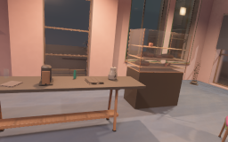
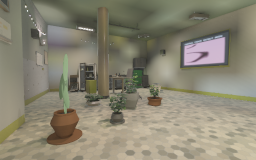

reference
Co-visibility legend: camera 0 camera 1
Scene seed 0



Scene seed 1




Measured distributions
{
"baseline_m": {
"count": 8,
"max": 1.5043840408325195,
"mean": 1.3656549751758575,
"min": 1.2295076847076416,
"p05_p25_p50_p75_p95": [
1.2295076847076416,
1.237944722175598,
1.490783452987671,
1.490783452987671,
1.5043840408325195
]
},
"overlap": {
"count": 8,
"max": 0.8630126953125,
"mean": 0.6816894531250001,
"min": 0.3993408203125,
"p05_p25_p50_p75_p95": [
0.3993408203125,
0.678955078125,
0.7447021484375,
0.77412109375,
0.8630126953125
]
},
"reprojection_p99_pixels": {
"count": 8,
"max": 0.00008110158,
"mean": 0.000051222330375,
"min": 0.000038146973,
"p05_p25_p50_p75_p95": [
0.000038146973,
0.000043158372,
0.000046407797,
0.000046407797,
0.00008110158
]
},
"triangulation_degrees": {
"count": 8,
"max": 18.40212914967941,
"mean": 14.904906869584932,
"min": 12.309776350243911,
"p05_p25_p50_p75_p95": [
12.309776350243911,
13.109054196748176,
16.104204271065676,
16.78653548357515,
18.40212914967941
]
}
}